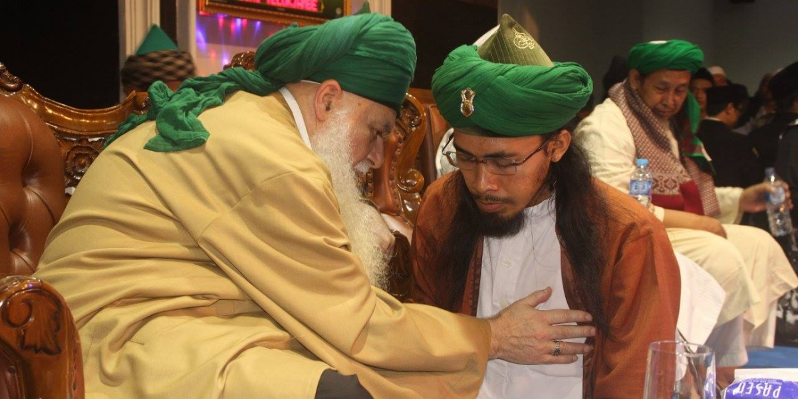
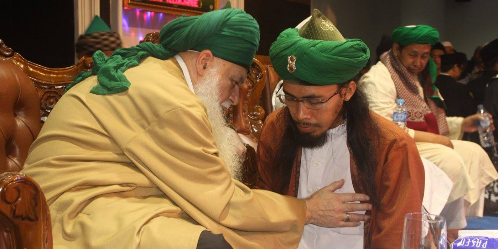
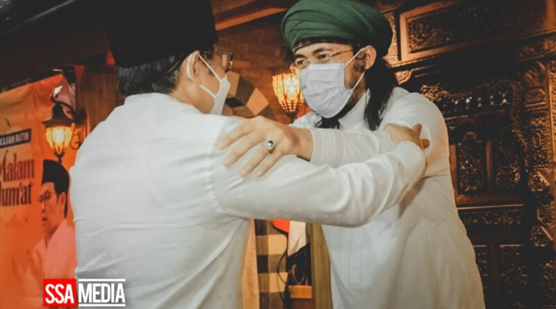

Cak Imin sambangi Sayyid Seif Alwi
 H. Abdul Muhaimin Iskandar M. Si. yang akrab disapa Cak Imin,
Kamis (11/3/2021), hadir pada gelaran kajian rutin Majelis, yang dipimpin Sayyid Seif Alwi, di Karawang. yang kunjungan ini, dimaksudkan untuk membangun Sinergi diantara Ulama dan Umaro...read more
WASIAT SAYYIDINA UMAR

Sayyidina Umar bin Khattab adalah khalifah kedua yang berkuasa pada tahun 634 M sampai 644 M.
Beliau merupakan salah satu dari Khulafaur Rasyidin. Sayyidina Umar merupakan salah satu sahabat utama dari Nabi Muhammad SAW, yang juga merupakan ayah dari Sayyidah Hafshah, istri Nabi Muhammad SAW.
Dikisahkan bahwasanya beliau berwasiat... read more
unta Nabi Sholeh

Unta adalah hewan yang istimewa. Selain susu dan dagingnya yang bermanfaat, unta juga dikisahkan dalam Quran dan berjumpa dengan kaum yang begitu sombong, kaum Tsamud, kaumnya Nabi Shaleh. Bagi kaum Tsamud, Shaleh adalah tumpuan harapan. Sebelum diutus menjadi Rasul, beliau seakan menjadi sosok yang sempurna: terkenal dan digadang-gadang bakal jadi pemimpin kaum Tsamud. Namun, tatkala beliau mengajak untuk menyembah Allah dan meninggalkan berhala, segalanya pudar. Seolah-olah ketika Shaleh menyeru kepada mereka untuk menyembah Allah... read more
Ahbaburrosul Indonesia 2021